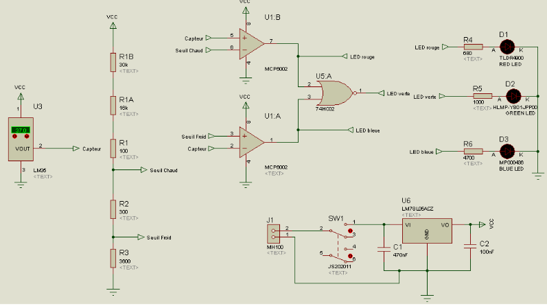
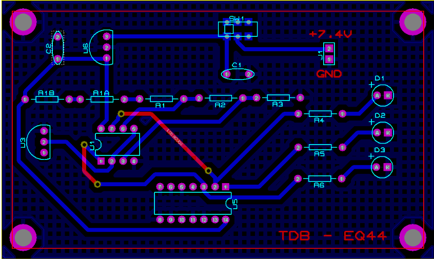
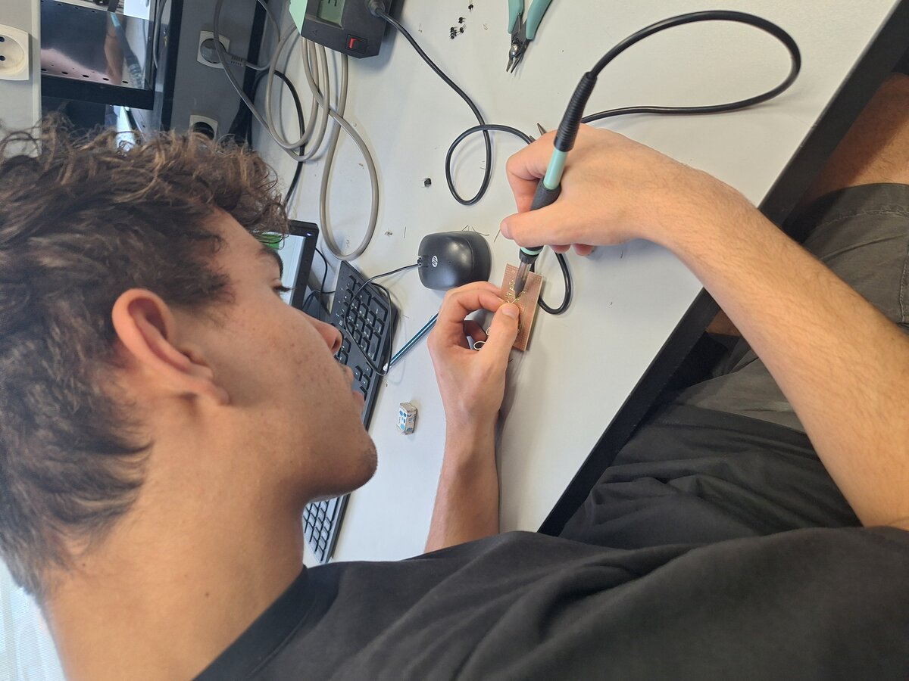

Thermomètre de bain pour bébé
Projet en équipe de 4 | Conception matérielle
Contexte & Objectif
L'objectif de ce projet était de concevoir un thermomètre de bain répondant à des exigences strictes : indiquer visuellement les seuils froid, tiède et chaud. Une des contraintes majeures était financière : le produit final devait coûter moins de 20€ TTC.
Mon rôle & Difficultés
J'ai alterné les rôles de meneur et suiveur. Techniquement, nous avons réalisé le schéma structurel sur Proteus Isis et le routage sur Ares. Lors de la fabrication matérielle, nous avons fait face à des défis : un composant soudé à l'envers et une alimentation capteur oubliée.
Solution : J'ai appris à utiliser la pompe à dessouder et nous avons tiré un fil de pontage (strap) pour relier l'alimentation manquante. Ces erreurs formatrices nous ont appris l'importance d'une double vérification du routage.
Galerie du projet




